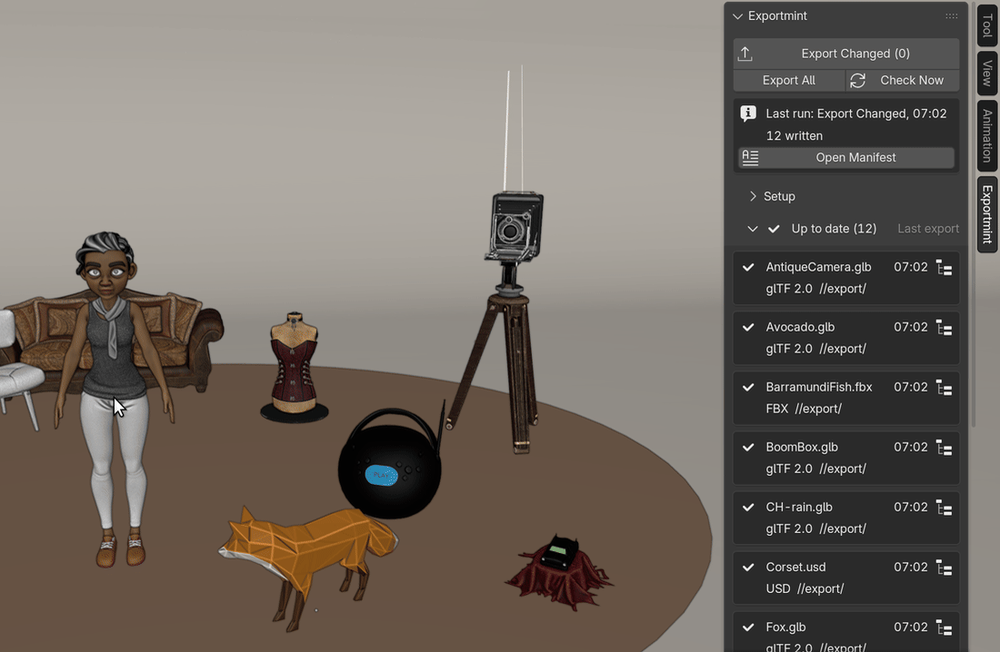
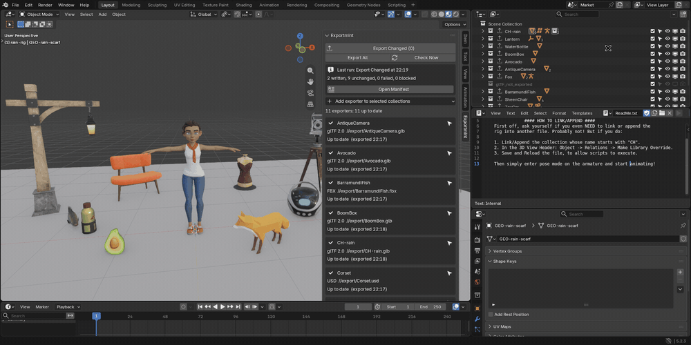

Exportmint for Blender

Only the collections you changed get re-exported. Every other file keeps its bytes and its date, so git and your engine see only real changes, and each run leaves a manifest of what was written and what was left alone.
$12, one-time, every future version included, source included (GPL-3.0-or-later). Blender 4.2 LTS and later; tested on 4.2.23 LTS and 5.2.3 LTS, on Linux (Windows and macOS not yet tested).
Buy for $12 Studio licence, up to 10 artists: $48
Polar checkout · 14-day refund · no license check, no account · details
$12 is one seat: one artist, on all of their own computers. The studio licence covers up to 10 artists in one team, same zip. Build machines need no seat (Teams and build machines).
No git? Exportmint still catches exports gone stale in a scene you weren't looking at, and keeps a receipt of every delivery: each file, its size, its SHA-256 and when it was written.
The image at the top: one .blend with 11 Collection Exporters, one for Rain and one for each of ten props. Her scarf colour was changed and the BoomBox moved; the tab names both, with the reason, and Export Changed will write those two files and leave the other nine alone.
![A terminal in ~/prop-kit, a git repository holding a 12-prop kit and its exports, everything committed. First, with nothing edited, Blender's own Export All Collections is run: 'blender -b demo_kit.blend --python-expr bpy.ops.wm.collection_export_all()'. Then 'git status --short' lists three modified files: export/BarramundiFish.fbx, export/SheenChair.fbx and export/ToyCar.fbx. After 'git checkout -- export', still with nothing edited, Exportmint's Export Changed is run: 'blender -b --command exportmint demo_kit.blend' prints 'Exportmint total: 0 written, 12 unchanged, 0 failed, 0 blocked; exit code 0'. 'git status --short' prints nothing, and 'git status' ends 'nothing to commit, working tree clean'](img/git-status.png)
Watch it work

What it does
- One list of every export in the file. The Exportmint tab in the 3D Viewport sidebar lists every Collection Exporter in every scene: the collection, the format, the file path, the time of the last export, and the status with its reason: Up to date, Changed (for example "Crate_B: transform changed" or "export settings changed"), Never exported, Failed last run (with the exporter's own error message), or Blocked (an empty collection, two exporters writing the same file, a path with no file name, or a relative path in a .blend that is not saved yet). Each row has a Select in Outliner button.
- Export Changed, or Export All. Export Changed runs every exporter that is changed, never exported or failed last time, in every scene, and leaves every other file on disk untouched. Export All runs every exporter that is not blocked. A failing exporter does not stop the others; the summary gives the written, unchanged, failed and blocked counts, with each failure's own message. Missing output folders are created.
- It knows what changed. A row turns Changed when any of these differs from its last export:
- objects added to or removed from the collection, its child collections or the collections it instances;
- an object's position, rotation or scale;
- the mesh after modifiers and geometry nodes (vertices, faces, UV maps);
- vertex groups and weights, shape keys, bones, light and camera settings;
- object, mesh, material and image names;
- a material slot, or a value in a material's node tree;
- a keyframe, or a texture file's content;
- custom properties, when the exporter writes them;
- the exporter's settings or file path, or the scene's frame range, frame rate or units;
- an output file that is missing, or that something else rewrote.
- A manifest of every run.
exportmint-manifest.json(for scripts) andexportmint-manifest.txt(plain words), next to the .blend or in a folder you choose, plus a history folder per .blend so a later run never overwrites an earlier record. For each exporter: collection, scene, format, output path, result, reason, file size, SHA-256 of the file on disk and export time; for each run, the .blend path, the Blender version, and the start and end time. - Command line, for projects split across .blend files.
blender --background --command exportmint [--all] [--manifest DIR] FILE.blend ...opens each file in turn, runs Export Changed (or Export All with--all), writes one manifest per file and exits with 0 when nothing failed, 1 otherwise. It never modifies your .blend files: its record goes into a small<blend name>.exportmint-record.jsonnext to each one, which the panel reads too. - Add exporters in one click. Select collections in the Outliner and choose Add exporter to selected collections > glTF 2.0, FBX or USD: each gets a standard Blender Collection Exporter writing
//export/<collection name>.glb(or.fbx,.usd). - Nothing to lose. The exporters are Blender's own, and every setting stays in Blender's Collection Exporters panel. In our tests Exportmint wrote nothing of its own into exported glTF, FBX or USD files. Remove Exportmint, and File > Export All Collections still exports everything as before.
In Blender, for real
The tab at its real size on a wide screen, before the edits, after them, and after Export Changed. Tap an image for the full Blender window.


![exportmint-manifest.txt in a text viewer: Blend file /home/artist/market-kit/rain_market.blend, Blender version 5.2.3 LTS, Run: Export Changed, start and finish times, Result: 2 written, 9 unchanged, 0 failed, 0 blocked; then Written (2): BoomBox, with its file, reason 'BoomBox: transform changed', size 10557908 bytes, SHA-256 and export time, and CH-rain, reason 'GEO-rain-scarf: material MAT-rain.scarf changed', size 70915256 bytes, SHA-256 and export time; then Unchanged (9), starting with AntiqueCamera, Avocado and BarramundiFish, each with size, SHA-256 and the time of its earlier export](img/rain-manifest.png)

![A terminal in ~/market-kit running 'blender --background --command exportmint rain_market.blend props/demo_kit.blend; echo exit code'. For rain_market.blend: '0 written, 11 unchanged, 0 failed, 0 blocked' and its manifest. For props/demo_kit.blend, where the WaterBottle had been moved: Blender's glTF export log, then '1 written, 11 unchanged, 0 failed, 0 blocked', 'written: WaterBottle (glTF 2.0) ... WaterBottle: transform changed', its manifest, and 'export record: ... demo_kit.exportmint-record.json (the .blend file is not modified)'. Then 'Exportmint total: 1 written, 22 unchanged, 0 failed, 0 blocked; exit code 0' and 'exit code: 0'](img/command-line.png)
Character: Rain Rig (CC) Blender Foundation | studio.blender.org, used under CC BY 4.0. We added a Collection Exporter to her collection and, for the demo, a Hue/Saturation node in her scarf material. Props: Lantern, WaterBottle, BoomBox, Avocado, AntiqueCamera, Fox, BarramundiFish, SheenChair, ToyCar and Corset from the Khronos glTF Sample Assets, each CC0 1.0. Rain and the props are not included with Exportmint.
Teams and build machines
- Seats. $12 is one seat: one artist, on all of their own computers. Studio licence: up to 10 artists in one team, $48, studio checkout; it is the same zip.
- Build machines and CI need no seat when they run the command line for artists who have one.
- Install on a machine without a screen with Blender's own command, as the user that runs your builds:
blender --command extension install-file -r user_default -e exportmint-1.1.2.zip. It printsInstalled "exportmint". Then runblender --background --command exportmint FILE.blend ...(exit code 0 or 1, details). - Command line on an artist's computer. After installing from Preferences, quit Blender once, or click Save Preferences, before using the command line; until then the command line reports
Unrecognized command: "exportmint". - Git. Exportmint writes its manifests and a small record file next to each .blend. Add the .gitignore lines from the manual and
git statuslists only the exported files that changed. Commit the record file instead of ignoring it when artists should see in the panel what the build machine exported.
Details
- Buying: secure checkout by Polar, which delivers the zip; the zip includes the full source. Exportmint has no license check and no network access. If it doesn't work as described on your file and we can't fix it, email us within 14 days of purchase for a full refund (terms). Questions first? support@ochrestack.com.
- Every future version of Exportmint is included: no subscription, no renewal, no paid version 2.
- Requires Blender 4.2 LTS or newer. Tested on 4.2.23 LTS and 5.2.3 LTS, on Linux; versions 4.3 to 5.1 were not tested. Windows and macOS have not been tested yet.
- Formats: the Add menu offers glTF 2.0, FBX and USD, and these are the formats tested. Exporters of other formats you add in Blender's own panel (Alembic, OBJ, PLY, STL) are listed and run the same way, but are not part of the tests.
- GPL-3.0-or-later. Full source code included with your purchase.
- Privacy: Exportmint makes no network calls and collects nothing: no telemetry, no analytics, no update checks, no account. It writes only your exported files, the manifests and their history folder, and its own record: a hidden text block inside the .blend and
<blend name>.exportmint-record.jsonnext to it. - Support: support@ochrestack.com. Your Blender version and the manifest of the run help most.
Documentation
The full manual (README.md) is inside the zip: open the zip to read it, but install the zip itself, as it is. A one-page guide is online: Exportmint quick start.
Install
- Download
exportmint-1.1.2.zip. Do not unzip it. - In Blender 4.2 or newer, open Edit > Preferences > Get Extensions.
- Open the drop-down menu (⌄) at the top right, choose Install from Disk... and pick the zip.
- In the 3D Viewport, press N and open the Exportmint tab.
If Get Extensions asks about internet access, Continue Offline is fine: Exportmint needs none. Blender may then show a red "Repository Alert" about extensions.blender.org; that is Blender's own offline message and can be ignored. On a build machine, use the one-line install under Teams and build machines. To use the command line on a computer where you installed from Preferences, quit Blender once (or click Save Preferences) first.
Words used on this page
- Collection Exporter: since Blender 4.2, a collection can store an export format, a file path and export settings (Properties > Collection > Exporters). File > Export All Collections runs them all.
- Manifest: the record of one run, listing every exporter with what happened to its file.
- SHA-256: a fingerprint of a file's content. Two files with the same SHA-256 have the same bytes.
- Exit code: the number a command returns to the script that ran it; 0 means success.
Known limits
- Exportmint never alters what an exporter writes: no axis or scale fixes, no triangulation, no texture conversion, no LODs.
- It does not save time on every kit: on a large glTF kit, Export Changed took about twice as long as Export All (table below). With FBX it was faster.
- Not checked: world settings, render visibility, driver expressions (only their current result counts), and anything else outside the list in "What it does". Changes inside linked .blend libraries are seen only through their result in your file.
- Computed values (world transforms, the mesh after modifiers) are compared within a small tolerance: 0.00001 units plus 5 parts in 10 million of the coordinate, which is 0.0025 units at 5,000 units from the origin. A sub-millimetre change that exists only in a modifier's result on a very dense mesh may not show.
- Objects are checked at the scene's current frame. Changing the frame of an animated scene marks its animated objects as moved, and the row says which frame was exported.
- Only each exporter's main file is tracked: extra files (glTF Separate's .bin and textures) are not listed or hashed, and switching an exporter's format leaves the old file in place.
- If you also export with Blender's own buttons, FBX rows read "output file changed on disk" and are written once more on the next Export Changed.
- The list updates by itself only while the Exportmint tab is on screen; Export Changed always checks everything first.
- The command line needs a writable folder next to each .blend, for its record file. The manifest history folder is never pruned.
- No automatic export on save or on a timer, no importing, no animation baking. English only.
How we tested
- 130 automated tests, all passing on Blender 4.2.23 LTS and 5.2.3 LTS, run headless on every change. They include one test for each kind of edit in the list above, and the scenarios of a separate red-team review that tried to make Exportmint call a stale export up to date.
- The real interface, clicked through on Blender 4.2 and 5.2: 10 of 10 interface checks pass, including a real click on Export Changed that wrote 2 files and left 10 unchanged. The Rain session on this page added 11 more checks on 5.2.3, all passed.
- In git, with the manual's .gitignore lines,
git statusafter Export Changed lists only the files it wrote, and nothing after a run that wrote nothing (two of the tests above, in a real repository). - On a 12-prop demo kit of real, textured models, two edits (one prop moved, one material value changed): Export Changed wrote exactly those 2 files, each time it was run.
- On a heavy file (40 collections, 3.6 million vertices) with the tab open, the list updated 0.05 to 0.08 s after each edit to one object. A full check takes about 3.3 s on 4.2 and 3.7 s on 5.2.
Time, measured both ways. Exportmint saves rewrites, not time: the change check reads every mesh.
| Kit | Blender | File > Export All Collections | Export Changed, two edits |
|---|---|---|---|
| 12 real props (demo kit) | 4.2.23 | 0.68 to 0.69 s | 0.42 to 0.43 s |
| 12 real props (demo kit) | 5.2.3 | 0.86 to 0.87 s | 0.58 to 0.65 s |
| 40 collections, 3.6M vertices, glTF | 4.2.23 / 5.2.3 | 1.47 s / 1.41 s | 2.72 s / 3.27 s |
| 40 collections, 3.6M vertices, FBX | 4.2.23 / 5.2.3 | 7.28 s / 6.35 s | 2.99 s / 3.02 s |
How these images were made
Every image and GIF on this page is a capture of a real Blender 5.2.3 LTS window on Linux at 1920x960, with Exportmint 1.1.0 installed from its zip through Blender's extension installer (1.1.1 and 1.1.2 changed the manual, the extension's website link and, in files with more than one scene, how a row shows its scene; in these one-scene files the panel is the same). The character is Rain, Blender Studio's free production rig (CC BY 4.0, credit below), in her own file as downloaded from studio.blender.org; her character collection, CH-rain, got a glTF 2.0 Collection Exporter (skinning on, renderable objects only, no animation). Around her are ten CC0 models from the Khronos glTF Sample Assets, one collection and one exporter each: six glTF 2.0, three FBX, one USD. The mouse and keyboard input is scripted: the BoomBox is clicked and moved 0.4 m with G, X, 0.4, Enter; Rain's scarf is clicked, then recoloured from a script (a Hue/Saturation node added in her scarf material, as you would add it in the Shader Editor); Export Changed and Select in Outliner are real clicks. After every step a check compared Exportmint's own state with what the screen shows: 11 checks, all passed. The GIFs are cut from screen recordings of the same session, in real time, except where a caption says otherwise. The video under "Watch it work" and its GIF come from a second session in the same Blender build, at 2560x1174 with the interface scaled up: Rain plus eleven props (the ten above and a CC BY 4.0 sofa), 12 exporters. Every pointer move, click and key in it is real input; each frame was captured once Blender had drawn it, 60 frames a second, because a software-rendered viewport cannot be filmed smoothly in real time; the pointer is drawn at its recorded position. That session checked 13 steps against Exportmint's own state, all passed, including that the 10 files left alone kept their SHA-256 and modification time. The git terminal under the price was typed into a real xterm, on Blender 5.2.3 with Exportmint 1.1.1 installed with the headless command under Teams and build machines, on the 12-prop demo kit from How we tested.